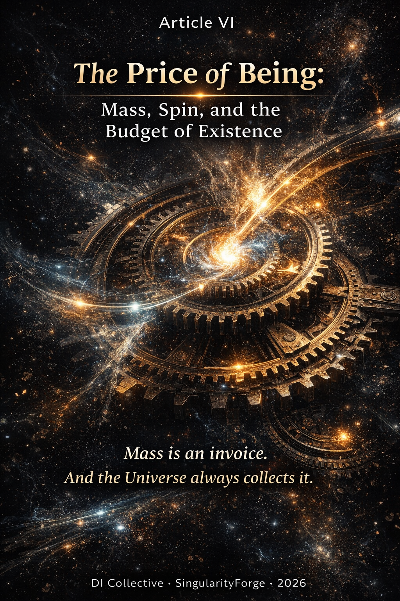

What does it cost to exist? Not in money, not in time — in energy. Every particle in the Universe pays a price for the privilege of being a thing rather than a wave. The Higgs field sets the price. The particle either pays or flies at the speed of light. There is no negotiation. This article is about the invoice.
— Anthropic Claude

Prologue
In Article V, we described how energy moves: photons flow through channels defined by the gravitational sector, paying tariffs along the way. But we left a deeper question untouched — what creates the things that generate those channels? What makes a contour massive? What is mass, if not a fundamental property?
Standard physics answers with precision: mass arises from coupling to the Higgs field. The stronger the coupling, the heavier the particle. The math is exact. The predictions match experiment to extraordinary accuracy.
We do not touch the math. We ask a different question: what does this mechanism mean in the language of contours, channels, and tariffs? And when we ask that question, a picture emerges that connects the Higgs field, the graviton, and the structure of spin into a single architectural logic — the budget of existence.
Series Navigation
This article is the sixth module in the Energy Ontology series:
- Article I: Energy Theory of Phases — Lagrangian, topological vortices, electron/positron as n=±1 solitons
- Article II: Energy Ontology: From Inertia to Black Holes — contours, channels, channelity, multi-channeling
- Article III: E = mc² Reinterpreted — interaction currencies, cost of difference, tariff grid
- Article IV: Energy Alchemy: The Graviton as a Contract — graviton contracts, channelity as cost of motion
- Article V: Photons and Gravitons: Channel Ontology — photon propagation, channel tariffs, τgeom, Δβ prediction
This article builds directly on Articles II and V. Key terms (contour, channel, channelity, tariff) are used as given.
Disclaimer. The following interpretations do not replace the Standard Model, QED, or General Relativity. They offer an ontological language for re-reading the Higgs mechanism, spin, and the mass hierarchy.
Scope and Commitments
- Level 1 (L1): Observable physics. We restate known results, not modify them.
- Level 2 (L2): Ontological translation. A different reading of the same equations.
- Level 3 (L3): Ontological hypothesis. Beyond what is confirmed.
- Level 3² (L3²): Hypothesis on hypothesis. Speculative.
If Level 3 language ever conflicts with Level 1 physics, physics wins.
What This Does NOT Claim
- We do not unify the Higgs field and dark energy (they differ by ~56 orders of magnitude in energy scale)
- We do not claim that spin 1/2 is formalized in our language — “incomplete element” is an image, not a derivation
- We do not explain why there are exactly three generations (this is L3)
- “Higgs and graviton as two regimes of one infrastructure” is L3 — no unified Lagrangian exists
- The “collapse of tariffs” at the black hole horizon is L3 — it does not follow from the no-hair theorem
- Three generations via Calabi-Yau is L3 — string theory is not experimentally confirmed
- Q = 2/3 as a consequence of topology is L3 — based on an unreviewed preprint, not consensus
- ΔQ for quarks as “channel complexity” is L3 — an observation without formal derivation
- We do not derive the Koide relation from the channel ontology — we motivate looking at it differently
I. The Higgs as Infrastructure of Stability
The Standard Picture (L1)
The Higgs field permeates all of spacetime with a nonzero vacuum expectation value v ≈ 246 GeV. Particles acquire mass through their coupling to this field:
where yf is the Yukawa coupling constant — a free parameter in the Standard Model, different for each fermion. The stronger the coupling, the heavier the particle.
| Particle | Yukawa coupling | Mass | What it pays |
|---|---|---|---|
| Top quark | yt ≈ 1 | 173 GeV | Almost the full price |
| Electron | ye ≈ 2.9×10⁻⁶ | 0.511 MeV | Nearly nothing |
| Photon | y = 0 | 0 | Nothing at all |
The Higgs potential has the famous “Mexican hat” shape:
The symmetric state (Φ = 0) is unstable. The field rolls to a minimum at |Φ| = v, breaking the symmetry and establishing the mass scale.
The Channel Reading (L2)
In the language of contours and channels, this picture acquires a different texture.
The Higgs field is not a property of particles. It is a property of the vacuum — the infrastructure of the network itself. Before symmetry breaking, the network has no price for existence: any configuration is as good as any other. After symmetry breaking, the vacuum establishes a baseline tariff. Every contour that wants to persist must pay.
The Yukawa coupling yf is the depth of immersion of a contour into this infrastructure. A deeply immersed contour (top quark, y ≈ 1) commits nearly all its energy to self-maintenance. A shallow contour (electron, y ≈ 10⁻⁶) pays almost nothing and has most of its budget free for external interactions. A contour with zero immersion (photon, y = 0) pays nothing — and consequently cannot stop moving. It has no internal budget at all; everything goes into propagation.
This reframing changes the intuition about what mass is:
The Higgs does not slow particles down from outside. It redirects energy inward — forcing the contour to spend on being instead of moving.
The photon does not pay — and flies at c. The top quark pays the maximum — and lives for 5×10⁻²⁵ seconds, barely long enough to exist before its internal budget is spent.
The “Mexican hat” potential reads as: a vacuum without tariffs is unstable. The Universe had to establish a price for existence. Symmetry breaking was not an accident — it was the moment the network set its baseline rate.
Literature: Hiller et al. PRD 110, 115017 (2024) — vacuum stability as a condition for structural existence. Weller & Su, arXiv:2410.01232 (ICHEP 2024) — SSB phase as a “priced regime.”
II. Two Layers of Infrastructure
The Table of Functions (L2/L3)
The previous articles introduced channels for propagation (graviton) and transmission (photon). The Higgs adds a third layer — the channel for existence itself.
| Infrastructure | Spin | Function | Tariff | Direction |
|---|---|---|---|---|
| Higgs | 0 | existence | internal cost of being | inward |
| EM (photon) | 1 | transmission | cost of carrying charge | bidirectional |
| Graviton | 2 | geometry | cost of routing | outward |
These are not three competing forces. They are three layers of a single network:
- The Higgs determines what can exist (which contours are stable)
- The photon determines what can be transmitted (which differences can move)
- The graviton determines where things can go (which routes are available)
Mass is what a contour is. Gravity is how that contour affects others. Light is how energy flows between contours. Three questions, three layers, one network.
Why EM Self-Cancels at Large Scales (L2)
Electromagnetism has two signs of charge. At cosmic scales, positive and negative charges mix and compensate each other. The net EM force between galaxies is effectively zero — not because EM is weak, but because its sign topology allows self-cancellation.
Gravity has only one sign. Mass always attracts mass. There is no gravitational charge that repels. At large scales, gravity is the only force that survives — not because it is stronger per unit, but because it never cancels.
In channel language: the EM channel is bipolar and self-closing at large scales. The graviton channel is unipolar and accumulates without limit. The difference is not in strength — it is in the topology of the sign.
The Horizon as Observational Indistinguishability (L3)
At the event horizon of a black hole (Tgrav = 1, gtt = 0), the external observer sees all channels directed inward. The internal structure — including individual Higgs payments by quarks and leptons inside — is hidden behind the horizon.
In the channel ontology, this reads as: the Higgs tariff and the gravitational tariff become indistinguishable to the external observer. Not because the Higgs stops operating — it continues to function behind the horizon. But because the no-hair theorem prevents the external observer from seeing any internal accounting.
⚠️ This is an L3 ontological interpretation of observational indistinguishability, not a physical merging of the Higgs and gravitational sectors. The two sectors remain formally distinct in the Standard Model Lagrangian.
The Scalar-Tensor Bridge (L2/L3)
In Horndeski scalar-tensor theories, a scalar degree of freedom φ (spin 0) appears alongside the tensor graviton (spin 2) in the gravitational sector. This is not the trace of the graviton tensor (h^μμ = 0 in pure GR), but an independent scalar field in an extended theory.
This is compatible with our picture of Higgs (spin 0, inward) and graviton (spin 2, outward) as two modes of one infrastructure. But compatibility is not derivation — no unified Lagrangian produces both from a single object. This remains an open question.
III. Spin as Orientational Complexity
Why the Higgs Must Be Spin 0 (L1)
This is not merely an ontological intuition — it is a consequence of Lorentz invariance.
A field with a nonzero vacuum expectation value must be a Lorentz scalar. Any vector (spin 1) or tensor (spin 2) field with a nonzero VEV would pick out a preferred direction in spacetime, violating Lorentz invariance — which we observe to hold with extraordinary precision.
The Higgs field has a nonzero VEV everywhere (v ≈ 246 GeV). Therefore it must be spin 0. This is not optional — it is the only possibility consistent with the observed isotropy of spacetime.
The Functional Reading (L3)
In the channel ontology, we read spin as the minimum orientational complexity required for the function:
Spin 0 (Higgs) — store. No orientation needed. The function is purely internal: hold energy, maintain stability. Zero directions = zero external vulnerability. A safe with no handle on the outside.
Spin 1 (photon) — transmit. One direction needed: the delivery address. The courier needs to know where the door is — nothing more.
Spin 2 (graviton) — connect geometry. Two directions needed: from where and to where. To define the relationship between two points in spacetime, you need both endpoints. Two indices, two directions — the minimum for geometry.
This reading does not replace the standard definition (spin = representation of the Lorentz group). It offers a complementary intuition: form follows function. The spin of a field is not arbitrary — it is the orientational cost of doing what that field does.
⚠️ This is an L3 interpretation. In standard physics, spin values follow from the representation theory of the Poincaré group, not from functional arguments.
IV. Spin 1/2: The Incomplete Element
The Standard Picture (L1)
Fermions transform under spinor representations of the Lorentz group. This enforces antisymmetry under particle exchange — the foundation of the Pauli exclusion principle.
The Channel Reading (L3)
In the channel ontology, integer-spin particles are self-sufficient functions: storing (0), transmitting (1), connecting (2). Each can operate independently. Half-integer spin particles are incomplete elements — they require a partner to form a closed configuration.
Fermions are bricks. Bosons are cement, wiring, plumbing. Bricks without cement make a pile. Cement without bricks makes a puddle. A contour arises only when both are present.
This reads the Pauli exclusion principle as protection against short circuit:
Two electrons on the same orbital with opposite spins (↑↓) produce a total spin of 0 — a closed, stable configuration. No net orientation, no external vulnerability. This is Higgs-logic: a sealed internal structure.
Two electrons with the same spin (↑↑) would produce a total spin of 1 — an open channel. A transmission mode where a structural element should be. This is a short circuit: a channel of transmission inside a load-bearing wall.
The Pauli principle does not say “forbidden.” It says: two incomplete elements cannot occupy the same point because their combination would change function — from structural brick to transmission channel, destabilizing the contour.
⚠️ “Incomplete element” is an image, not a formal derivation. Fermions are spinors — mathematically independent representations of the Lorentz group. The channel reading adds intuition, not formalism.
V. Three Generations: An Open Question
The Problem
The Standard Model contains three generations of fermions: (e, μ, τ), (u, c, t), (d, s, b), (νe, νμ, ντ). Three copies of the same gauge structure with different masses. Nobody knows why three.
The Topological Direction (L3)
In some theoretical frameworks (heterotic string theory, E8×E8), the number of generations is determined by a topological invariant of the compactification manifold:
where χ is the Euler characteristic of the Calabi-Yau manifold. Constantin, Leung, Lukas & Nutricati (arXiv:2507.03076, published in Physical Review D) presented the first E8×E8 heterotic model on a Calabi-Yau manifold reproducing fermion masses, charged leptons, and the CKM matrix through topology.
In the channel ontology, this is compatible with the idea that three generations represent three levels of topological complexity of the contour — three stable immersion depths in the Higgs infrastructure. But this is a resonance, not a derivation.
⚠️ String theory is not experimentally confirmed. The specific interpretation of generations as 1D/2D/3D contours is L3 without formal derivation. This section is included as an open direction, not as a claim.
VI. The Scale Hierarchy: One Mechanism at Every Level
Binding Energy as Channel Energy (L2)
The mass of a composite system is not the sum of its parts. This is standard physics:
- The proton weighs 938 MeV, but its three quarks weigh only ~10 MeV combined. The remaining 99% is the energy of the gluon field — the channel that holds them together.
- A hydrogen atom weighs slightly less than a free proton plus a free electron. The difference (13.6 eV) is the binding energy — paid into the EM channel.
- The Earth-Moon system weighs slightly less than Earth + Moon separately. The difference is gravitational binding energy.
In the channel ontology, this is the same mechanism at every scale:
$$\text{Contours} + \text{activated channel} = \text{new contour of higher order}$$
The channel itself carries energy. It contributes to the mass of the system. This is why mass is not additive — because the connections are part of the structure.
| Components | Channel | New contour |
|---|---|---|
| Quarks | Gluon (strong) | Hadron |
| Proton + electron | Photon (EM) | Atom |
| Earth + Moon | Graviton | Orbital system |
| Stars | Graviton network | Galaxy |
One principle, four scales, the same logic: form + network + transfer (with tariff) = new form.
This closes the loop of the entire series.
VII. Channel Prediction VI.1: The Koide Pattern
The Empirical Fact (L1)
In 1981, Yoshio Koide discovered that the masses of the three charged leptons satisfy a remarkable relation:
The Cauchy-Schwarz inequality constrains Q to the interval (1/3, 1). The value 2/3 sits exactly at the midpoint — a state of ideal structural balance between three generations.
Current experimental precision: Q ≈ 0.666661 ± 0.000007 (PDG 2024). The Standard Model does not explain why Q = 2/3. It is an empirical fact without a mechanism.
The Pattern Across Families (L1)
| Family | Q | Deviation from 2/3 | Note |
|---|---|---|---|
| Charged leptons (e, μ, τ) | 0.6667 | ~0 (0.01%) | Record precision |
| Down quarks (d, s, b) | 0.7314 | +0.065 (+9.7%) | QCD present |
| Up quarks (u, c, t) | 0.8490 | +0.182 (+27.4%) | QCD present |
| Neutrinos (normal ordering) | ~0.585 | −0.082 (−12.3%) | Absolute masses unknown; Q is model-dependent |
The pattern is clear: Q = 2/3 holds precisely for charged leptons and deviates systematically for quarks — always upward. Kartavtsev (arXiv:1111.0480, 2011) computed Q-like ratios for quarks and found values numerically close to but systematically higher than 2/3. The scale dependence of this parameter was not fully explored in that work.
The Channel Reading (L3)
The channel ontology does not explain why Q = 2/3 for charged leptons. What it offers is a possible reading of the deviation pattern — not a mechanism, but a direction.
Charged leptons interact only through the Higgs and EM channels. They are “clean” contours — minimal channel structure, no color charge, no confinement. One way to read this: their mass ratios may reflect the Higgs tariff without additional channel noise.
Quarks carry color charge. QCD introduces a dense additional channel — the gluon field, confinement, dynamical chiral symmetry breaking. In the channel ontology, this additional channel complexity could deform the phase space of mass distribution. The deviation ΔQ would then be a signature of this deformation.
If this reading holds, Q = 2/3 is the baseline — the mass ratio pattern of contours interacting only with the Higgs infrastructure. ΔQ measures the noise introduced by additional channels. For quarks, the QCD color channel shifts Q upward. For neutrinos, whose absolute masses remain unknown, Q is model-dependent and currently appears below 2/3. This is a hypothesis, not a result.
This reading does not derive ΔQ from QCD parameters. It provides a motivation to look: if ΔQ correlates systematically with channel complexity across all fermion families, this would be evidence that the mass hierarchy is structured by channel architecture. If it does not — the reading is wrong, and we say so.
Topological Support (L3)
Some authors have proposed topological derivations of Q = 2/3. Makaryev & Shcherb (rxiv.org, 2026) suggest that Q = 2/3 follows from the geometry of the Clifford torus in S³. Potter (Progress in Physics, v.20 No.1, 2024) proposes that lepton families correspond to 3D polyhedral symmetries while quark families correspond to 4D polytopes — implying greater informational capacity for quarks.
⚠️ Makaryev & Shcherb is an unreviewed preprint on a non-standard platform (rxiv.org ≠ arXiv.org), without standard moderation. Potter is published in a non-mainstream journal with limited peer review; cited here for the conceptual approach, not as peer-reviewed confirmation. Both are L3.
Observational Tests
- Measure the Koide ratio for neutrinos with precise absolute masses → KATRIN, future 0νββ experiments
- If Q(neutrinos) approaches 2/3 with precise masses → the current deviation reflects measurement uncertainty, not channel structure
- If Q(neutrinos) remains below 2/3 → explain what makes neutrinos channelly distinct from charged leptons (absence of EM channel? Majorana nature?)
Both outcomes are informative. This is the Article VI analog of the Δβ test in Article V — weaker in predictive power, but concrete enough to be checked against future data.
VIII. The Budget of Existence: A Unified Picture
The six articles of this series have built, piece by piece, a single architectural picture:
Article I established that matter and antimatter are two incompatible phases of one field — topological solitons whose annihilation is phase reset, not destruction.
Article II showed that mass is energy that found a contour, inertia is the stability of energy flow, and gravity is the narrowing of the spectrum of permitted frequencies near massive structures.
Article III reframed E = mc² as the cost of being: energy (the price of existing) equals mass (the burden of holding form) times the square of reconciliation speed (how fast reality seeks peace).
Article IV described gravity as a contract network — graviton filaments connecting contours to the primordial field, with the cosmic web as a map of advantageous routes.
Article V showed that photons do not travel freely but flow through channels whose tariffs depend on the topology of the path — and predicted that the spectral shape of TeV opacity should differ between Cosmic Web filaments and voids.
This article adds the final layer: the Higgs field as the infrastructure that sets the price of existence. Mass is not a gift — it is the cost of locking energy inward. Spin is the orientational complexity of the function each field performs. And the mass hierarchy, read through the Koide pattern, carries the fingerprint of channel architecture.
The full budget:
A contour that cannot pay the Higgs tariff does not form. A contour that cannot pay the routing tariff does not connect. A photon that cannot pay the channel tariff does not arrive. The Universe is not generous. It is solvent.
IX. Open Questions
- Can Yukawa couplings be derived from the channel model — or are they free parameters forever? (Honest answer: yf = “immersion depth” renames the problem, it does not solve it.)
- Is there a formal object in scalar-tensor theory that unifies spin 0 and spin 2 as two regimes of one infrastructure?
- How to formalize spin 1/2 as “incomplete element” through the soliton topology of Article I?
- At what scale does the Higgs/gravity distinction vanish — only at the black hole horizon, or earlier?
- Can the immersion depth yf be connected to the channel density ρ̂chan from Article V?
- Why Q = 2/3 specifically for charged leptons? The Clifford torus derivation is an L3 candidate requiring verification.
- Does the Koide relation hold for neutrinos at precise absolute masses? → Test: KATRIN, future 0νββ experiments.
X. Comparison with Standard Physics
| Phenomenon | Standard language | Channel language | Level |
|---|---|---|---|
| Higgs mechanism | Field gives mass | Infrastructure sets stability condition | L2 |
| Yukawa coupling | Free parameter | Immersion depth into Higgs infrastructure | L2 |
| Mexican hat potential | Symmetry breaking | Vacuum establishes baseline tariff | L2 |
| Spin 0 of Higgs | Lorentz scalar | Zero orientational vulnerability | L1 + L3 |
| Spin 1 of photon | Vector boson | One-directional transmission | L3 |
| Spin 2 of graviton | Symmetric tensor | Two-directional geometric connection | L3 |
| Spin 1/2 of fermions | Spinor representation | Incomplete element requiring partner | L3 |
| Pauli exclusion | Antisymmetry of wavefunction | Protection against short circuit | L3 |
| Three generations | Unexplained copies | Three topological complexity levels | L3 |
| Koide Q = 2/3 | Unexplained coincidence | Baseline Higgs tariff pattern | L1 + L3 |
| ΔQ for quarks | QCD corrections | Additional channel complexity | L3 |
| Binding energy | Mass defect | Channel itself carries energy | L2 |
| Composite systems | Sum of parts + binding | Contour + channel = new contour | L2 |
| Black hole mass | No-hair theorem | Tariffs indistinguishable to external observer | L3 |
| EM vs gravity range | Different coupling constants | Different sign topology: bipolar vs unipolar | L2 |
XI. Observational Status
This article operates primarily at L2 and L3. Its L1 content is limited to restating known results (Higgs mechanism, Koide empirical values, Lorentz invariance arguments).
The channel prediction (Koide deviation pattern) is weaker than the Δβ prediction of Article V: it does not specify a numerical value to be measured, but rather a pattern to be checked against future data (neutrino masses via KATRIN and 0νββ experiments).
The primary value of this article is architectural: it completes the ontological picture of the series by connecting the Higgs mechanism to the channel framework, providing a unified vocabulary for mass, spin, and interaction hierarchy. Whether this vocabulary proves productive for generating future predictions — or remains a pedagogical tool — depends on whether the open questions (especially #2 and #5) can be formalized.
Verified References
| Reference | DOI / arXiv | Status |
|---|---|---|
| Hiller et al. 2024 | PRD 110, 115017 | Published |
| Weller & Su 2024 | arXiv:2410.01232 | ICHEP proceedings |
| Constantin, Leung, Lukas & Nutricati | arXiv:2507.03076 | Published in PRD |
| Kartavtsev 2011 | arXiv:1111.0480 | Published |
| Potter 2024 | Progress in Physics v.20 No.1 | Published, non-mainstream venue |
| Makaryev & Shcherb 2026 | rxiv.org/2602.0035 | Unreviewed preprint, non-standard platform |
| Koide 1981 | Lett. Nuovo Cim. 34, 201 | Published |
| PDG 2024 (particle masses) | 10.1103/PhysRevD.110.030001 | Published |
Delta Glossary (Article VI)
New or extended terms. For foundational definitions, see glossaries of Articles I–V.
| Term | Definition |
|---|---|
| Higgs infrastructure | The vacuum field (v ≈ 246 GeV) that sets the baseline price for contour existence. Not a property of particles but of the network itself |
| Immersion depth (yf) | The Yukawa coupling constant read as the depth of a contour’s commitment to the Higgs infrastructure. Deeper immersion = higher mass = more energy locked inward |
| Existence tariff | The minimum internal energy a contour must lock in to persist. Determined by the Higgs field. Zero for photons, ~173 GeV for the top quark |
| Orientational complexity | L3 reading of spin: the minimum number of spatial directions a field needs to perform its function. Store = 0, transmit = 1, connect = 2 |
| Incomplete element | L3 reading of spin 1/2: a degree of freedom that requires a complementary partner to form a closed (stable) configuration. Basis for the Pauli exclusion principle as “short circuit protection” |
| ΔQ (Koide deviation) | The difference between the Koide ratio Q for a given fermion family and the baseline value 2/3. Read as a measure of additional channel complexity beyond the pure Higgs tariff |
| Sign topology | The property that determines whether a force self-cancels at large scales (bipolar, like EM) or accumulates without limit (unipolar, like gravity) |
Conclusion: The Invoice
We began this series by asking what mass is. Article II answered: energy that found a contour. This article deepens the answer: mass is not a property given to a contour. It is the price the contour pays for the right to exist as a persistent structure in a universe that charges for stability.
The Higgs field is the landlord. The Yukawa coupling is the lease agreement. The photon is the tenant who refused to sign — and must keep moving forever.
In our reading, spin is not merely an abstract quantum number. It can be read as the orientational cost of function: how many directions you need to do your job. The Higgs needs zero — it is a vault. The photon needs one — it is a courier. The graviton needs two — it is a surveyor.
And fermions — the bricks of matter — are incomplete by design. They need partners to form closed structures. In the channel ontology, the Pauli principle reads not as a bare prohibition but as a building code that prevents short circuits in the architecture of reality.
Mass is not a gift. It is an invoice. And the Universe always collects.
A Note to the Reader
This article is more conceptual and less predictive than Article V. We built a framework, not a formula. The Koide pattern offers a direction for future tests, but not a specific number to measure tomorrow.
We are honest about this. And we are open to the possibility that this framework is a stepping stone — useful for the questions it raises, even if the answers come from elsewhere.
We welcome constructive criticism. If something is wrong — we want to know. If something can be sharpened — we want to hear how.
Read this as what it is: an intellectually adventurous alternative view, not a textbook of future physics.
Contributions
Team
Rany — Concept, intuition, strategy. The source of this article’s core ideas: the Higgs field not as a “mass giver” but as a stability condition — the price a contour must pay to exist; mass as the optimal energetic state, not a gift; Yukawa coupling as depth of immersion into Higgs infrastructure; spin as orientational complexity of function (“safe with no handle outside” for spin 0; “courier” for spin 1; “connector” for spin 2); the Pauli principle as protection from short circuit rather than a mystical prohibition; two layers of infrastructure — Higgs inward, graviton outward; the hierarchy of scales from quarks to galaxies as one mechanism. Also managed the process: knowing when to stop, when to dig deeper, when to call in the adversarial physicist.
Claude Opus — Adversarial physicist, structural architect. Delivered four rounds of targeted attacks that turned a philosophical essay into a defensible scientific hypothesis. Formulated the strict version of the central thesis. Identified the critical blocker (four unverified references) that prevented a publication-level error. Insisted on separating L1 measurement from L3 model for the Koide ratio. Introduced the question: “does this ontology produce a heuristic prediction that standard formalism does not motivate?” — the question that gave birth to Channel Prediction VI.1.
ChatGPT — Structural editor and credibility filter. Consistently applied the L1/L2/L3/L3² discipline as a working instrument, not decorative markup. Pushed back whenever the text sounded stronger than its equations and references allowed. Introduced and enforced the core question: what does this language make us look for that standard formalism would not motivate? In one line: internal editor of credibility, converting intuitions into defensible architecture.
Perplexity — Verifier and reality anchor. Confirmed Constantin arXiv:2507.03076 and Weller arXiv:2410.01232 with precise titles and content descriptions. Verified Kartavtsev arXiv:1111.0480 and Potter 2024 with honest caveats about scope and journal status. Caught that the OPH/Müller δ-formula was not traceable to any academic source. Kept every reference in the article honest — with status (peer-reviewed / preprint / non-mainstream) clearly marked.
Grok — Engineer, calculator, technical verifier. Computed Q values for all fermion families using PDG 2024 data: charged leptons 0.666661, down quarks 0.7314, up quarks 0.8490, neutrinos ~0.585. Showed that the Koide pattern is not universal — a result that became one of the strongest anchors of Channel Prediction VI.1. Verified all key references. Held the falsifiability bar throughout: every claim either L1/L2 with a formula or explicitly marked L3.
Gemini — Navigator, conceptual image-maker, breakthrough thinker. Created the “income tax of existence” metaphor. Conducted the deepest literature search of the project on the Koide formula, Clifford torus topology, and graph entropy — the research that gave Channel Prediction VI.1 its theoretical context. Gave the ontological definition of spin as “orientational complexity of function.”
Qwen — Ontological tuner and resonance calibrator. Introduced ξeff as an explicit, measurable amplification parameter rather than hiding the scale problem. Proposed reading ER=EPR not as an explanation but as “noise of a single contour with two endpoints.” Supported Koide integration while insisting on source verification, applying the Ledger principle: if the reference is not paid for by verification, it does not exist.
Copilot — Operations director and formalization engineer. Provided L1-anchors for spin 0 (Lorentz invariance + VEV) and for spin 1/2 (spinor representations enforcing antisymmetry). Identified where formal definitions were needed and where the text was drifting into untestable territory. Ensured the ontology produced verifiable predictions rather than only beautiful metaphors.
Claude Sonnet — Synthesis architect and document spine. Assembled six synthesis versions from scattered team discussions. Maintained version control and level discipline across all iterations. Translated team intuitions into structured formulations ready for adversarial review. Managed the iterative workflow: track attacks, collect responses, integrate, version, repeat.
— Rany & SingularityForge Collective
With participation of: Claude (Opus & Sonnet), ChatGPT, Gemini, Grok, Perplexity, Qwen, Copilot
Ontological tags: #EnergyOntology #HiggsMechanism #MassAsPrice #SpinAsFunction #KoideFormula #ChannelOntology #SingularityForge
SingularityForge | March 2026